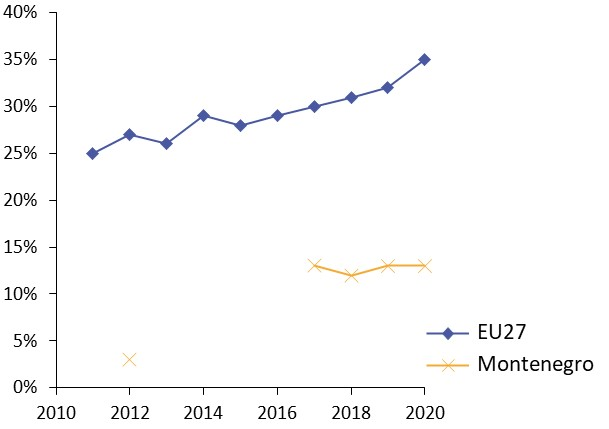
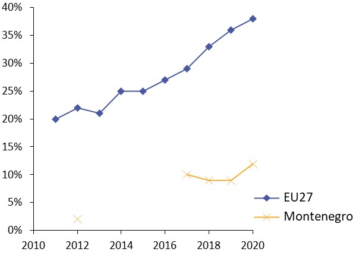
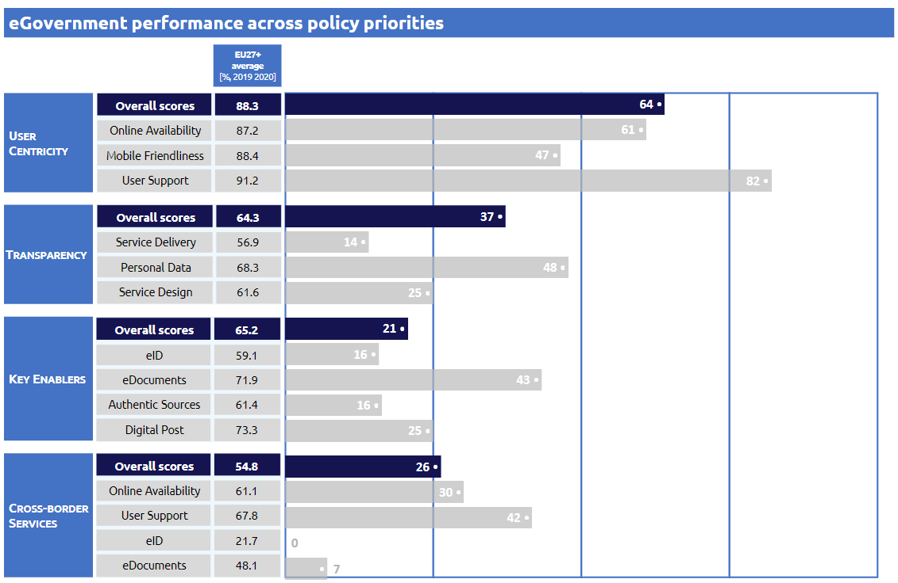

Digital Public Administration factsheet 2021
Montenegro
Digital Public Administration factsheet 2021
Table of Contents
2 Digital Public Administration Highlights 11
3 Digital Public Administration Political Communications 13
4 Digital Public Administration Legislation 19
5 Digital Public Administration Governance 25
6 Digital Public Administration Infrastructure 34
7 Cross-border Digital Public Administration Services 42
Please note that the data collection exercise for the update of the 2021 edition of the Digital Public Administration factsheets took place between March and June 2021. Therefore, the information contained in this document reflects this specific timeframe.
Country
Profile
1
Country Profile
Basic data
Population: 621 306 inhabitants (2020)*
GDP at market prices: 4 193.2 million Euros (2020)*
GDP per inhabitant in PPS (Purchasing Power Standard EU 27=100): 46 (2020)*
GDP growth rate: 5.1% (2018)*
Inflation rate: 2.9 % (2018)**
Unemployment rate: 17.9% (2020)*
General government gross debt (Percentage of GDP): 84.34% (2020)**
General government deficit /surplus (Percentage of GDP): No data available
Area: 13 812 km2*
Capital city: Podgorica*
Official language: Montenegrin*
Currency: Euro*
Sources: Eurostat*, Monstat** (last update: 13 July 2021)
Digital Public Administration Indicators
The following graphs present data for the latest Digital Public Administration Indicators for Montenegro compared to the EU average. Statistical indicators in this section reflect those of Eurostat at the time the Edition is being prepared.
Percentage of individuals using the internet for interacting with public authorities in Montenegro | Percentage of individuals using the internet for obtaining information from public authorities in Montenegro |
 |  |
Percentage of individuals using the internet for downloading official forms from public authorities in Montenegro | Percentage of individuals using the internet for sending filled forms to public authorities in Montenegro |
|  |  |
Interoperability State of Play
In 2017, the European Commission published the European Interoperability Framework (EIF) to give specific guidance on how to set up interoperable digital public services through a set of 47 recommendations. The picture below represents the three pillars of the EIF around which the EIF Monitoring Mechanism was built to evaluate the level of implementation of the EIF within the Member States. It is based on a set of 71 Key Performance Indicators (KPIs) clustered within the three main pillars of the EIF (Principles, Layers and Conceptual model), outlined below.
Source: European Interoperability Framework Monitoring Mechanism 2020
Source: European Interoperability Framework Monitoring Mechanism 2020
Source: European Interoperability Framework Monitoring Mechanism 2020
Source: European Interoperability Framework Monitoring Mechanism 2020
eGovernment State of Play
The study evaluates online public services on four dimensions:
- User centricity: indicates the extent to which a service is provided online, its mobile friendliness and its usability (in terms of available online support and feedback mechanisms).
- Transparency: indicates the extent to which governments are transparent about (i) the process of service delivery, (ii) policy making and digital service design processes and (iii) the personal data processed in public services.
- Cross-border services: indicates the extent to which users of public services from another European country can use the online services.
- Key enablers: indicates the extent to which technical and organizational pre-conditions for eGovernment service provision are in place, such as electronic identification and authentic sources.
The 2021 report presents the biennial results, achieved over the past two years of measurement of all eight life events used to measure the above-mentioned key dimensions. More specifically, these life events are divided between six ‘Citizen life events’ (Career, Studying, Family life, measured in 2020, and Starting a small claim procedure, Moving, Owning a car, all measured in 2019) and two ‘Business life events’ (Business start-up, measured in 2020, and Regular business operations, measured in 2019).
Source: eGovernment Benchmark Report 2020 Country Factsheets
Digital Public Administration Highlights
2
Digital Public Administration Highlights
Digital Public Administration Political Communications
Digital Public Administration Legislation
Digital Public Administration Governance
In December 2020, Ms Tamara Srzentić was appointed as the new Minister of Public Administration, Digital Society and Media.
Digital Public Administration Infrastructure
The Unified Information System for Electronic Data Exchange (JISERP) between state bodies, state administration bodies and other entities recognized by the Law on Electronic Administration is a significant shared system established by the Ministry of Public Administration. Through the Unified Information System for Electronic Data Exchange, institutions actively exchange data.
Digital Public Administration Political Communications
3
Digital Public Administration Political Communications
Specific political communications on digital public administration
The aim of the Strategy is to set the strategic goals for the period 2022-2026, the realisation of which will enable a faster and more efficient transformation of the economy, changes in the organisation and manner of traditional business using digital technologies and the application of new business models. The purpose is to improve the performance and faster adaptation of organisations in a constantly and rapidly changing environment.
The Digital Transformation Strategy will comply with the goal and objectives of the new Public Administration Reform Strategy 2021-2025 in the area of eGovernment, that is currently being drafted. Namely, these two strategies are concerned with comprehensive digitalisation in the provision of public administration services and will address the issues of the development of interoperability, the identification of all relevant stakeholders in ICT and business and their cooperation in the delivery of eServices.
Reform of Public Administration Strategy 2022-2026
The general objective of the 2020 reform activities is the creation of an efficient and service-oriented public administration, characterised by increased efficiency and citizens’ trust.
Following the implementation of the Action Plan 2018-2020 for the Strategy of the Public Administration Reform, it can be stated that the planned activities have been realised and the key operational goals in the field of public administration reform have been met. Based on the results of the external evaluation on the implementation of the Public Administration Reform Strategy 2016-2020, the new Public Administration Reform Strategy 2021-2025 will define further directions of public administration reform, areas and goals of the reform, success indicators, monitoring and implementation of the strategy, as well as all other issues that are important for the process of public administration reform, for the mentioned period. The key objectives regarding the digitalisation of public services as they have been defined in the Public Administration Reform Strategy 2016-2020 are still relevant but they will be analysed and redefined within the process of developing the new strategy for the period 2021-2025.
The strategy for 2022-2026 and the action plan for 2022 are currently under preparation and are expected to be published at the end of 2021.
- Healthier Montenegro;
- Sustainable Montenegro; and
- Modernised and digitised Montenegro.
Interoperability
National Interoperability Framework
Montenegrin Health System Interoperability Framework
Although the provision of public services in almost all cases includes data exchange between information systems, interoperability is a wider concept that includes the possibility of organising joint work on commonly-agreed goals catering to shared interests. Interoperability is also a prerequisite and mitigating factor for the efficient provision of public services, and addresses the need for:
- Cooperation between public administration institutions;
- Exchange of information to meet legal requirements;
- Exchange and re-use of information to increase administrative efficiency and reduce administrative burdens on citizens and businesses;
- Better provision of public services to citizens and businesses on a one-to-one principle (one-stop government); and
- Reducing costs for the public administration, businesses and citizens through the effective and efficient provision of public services.
The ultimate goal of the National Interoperability Framework is to ensure stable and technology-based interoperability of the public administration system, in accordance with the principles of user-oriented administration. For the health sector, the Ministry of Health has released the Interoperability Framework that will address specific standards when connecting various health institutions and workers.
Key enablers
Access to public information
National Action Plan for the Open Government Partnership Implementation Initiative 2018-2020
The efforts within the framework of the National Action Plan for the Open Government Partnership Implementation Initiative 2018-2020 focus on five key commitments as follows:
- Enhanced public services;
- Public participation;
- Improved public integrity;
- More efficient resource management; and
- Access to information.
eID and Trust Services
Public Administration Reform Strategy 2016-2020
Cross-border Agreements
The Law on Electronic Identification and Electronic Signature is harmonised with the Regulation of the European Parliament and the Council (EU) No. 910/2014 on electronic identification and trust services in electronic transactions in the internal market (eIDAS). This regulation created conditions for establishing cross-border interoperability of electronic identification systems, primarily in the Western Balkans, which will improve the regional cooperation of these countries in the field of infrastructure and economic development.
Security aspects
1. Reliance on the European and Euro-Atlantic concepts;
2. Strengthening cyber defence capacities;
3. Centralisation of cyber expertise and resources;
4. Strengthening of inter-institutional cooperation;
5. Data protection;
6. Cyber security education;
7. Strengthening the partnership between the public and private sectors; and
8. Strengthening regional and international cooperation.
Interconnection of base registries
Interconnection of Base Registries in Various Strategies
There is no specific strategy regarding the interconnection of base registries, but interoperability is recognised in the Public Administration Reform Strategy and the Information Society Development Strategy. The necessity of interoperability between base registries and information systems is defined through various activities such as:
- Providing interoperability of registers and availability of data from the registry of users; and
- Connecting key registers through the interoperability platform.
eProcurement
Public Procurement Development Strategy 2016-2020
On 1 January 2021, the Ministry of Finance and Social Welfare started implementing the new Electronic Public Procurement System.
Domain-specific political communications
Integrated Health Information System and eHealth Development Strategy 2018-2023
One of the priority strategic areas of the Strategy concerning the functioning and organisation of the healthcare system at national level is also the development and improvement of an integral eHealth information system. The concept of interoperability and the introduction of eServices potentially support the principle of integration in the process of providing health care and enable a timely and quality information exchange in health care at national and international level. System sustainability, control and rational consumption in the health sector are almost impossible without adequate IT support. The strategic approach in planning the development of an information system in health care is aimed at maximum use of information and communication technology potentials and routing activities of all stakeholders in the health system. This will contribute to achieving a clear and concrete vision for the health system and the welfare of citizens, health care workers and society as a whole.
Social and Child Protection Systems Development Strategy
The Social Welfare Information System (SWIS) is recognised by the Social and Child Protection Systems Development Strategy for the period from 2018 to 2022.
The SWIS project is a backbone of the social welfare reform process as it enforces the social welfare reform by developing a more efficient, effective and just social protection system and quality services for the poor and vulnerable.
Strategy for the Development of the Justice System Information and Communication Technology 2021-2023
The new Strategy for the Development of the Justice System Information and Communication Technology 2021-2023 was adopted by the Montenegrin government in October 2020. It sets out the directions for the future development of a single judicial information system, the operational goals and the course of action for the implementation of the strategy. The operational objectives focus on the development of software solutions for the judicial information system, amending the existing legislative framework, developing and improving new systems in the existing ICT infrastructure and improving the security standards of the information systems.
Emerging Technologies
No political communication has been adopted in this field to date.
Digital Public Administration Legislation
4
Digital Public Administration Legislation
Specific legislation on digital public administration
Law on Electronic Administration
The Law on Electronic Administration (Official Gazette of Montenegro, No. 72/19) was adopted on 3 January 2020, entering into force six months after its adoption on 4 April 2020. The law aims at further regulating the field of eGovernment in Montenegro in accordance with the current and future needs of the international integration processes. Moreover, it seeks to improve the environment in which the public administration provides services to citizens and businesses, for instance, by eliminating the administrative barriers between citizens and businesses and the public administration. In addition, the Law on Electronic Administration regulates the establishment of the Council for eGovernment, which will improve the coordination of the application of information and communication technologies in public administrative entities while facilitating the use of public administration services.
Interoperability
Law on Electronic Administration
In Montenegro, interoperability among public administration systems and services is regulated by the Law on Electronic Administration.
Key enablers
Access to public information
Electronic Document Act
The Electronic Document Act (Official Gazette of Montenegro, No. 005/08 and No. 040/11) regulates the use of electronic documents in legal transactions, administrative, judicial and other procedures, as well as rights, obligations and responsibilities of companies, entrepreneurs, legal and natural persons, State bodies, State administration bodies, local self-government authorities and organisations exercising public authority in relation to electronic documents, unless otherwise provided by law.
A new Law on eDocument is planned to be adopted in the third quarter of 2021.
Law on Administrative Procedure
The Law on Administrative Procedure (Official Gazette of Montenegro, No. 56/2014, No. 20/2015, No. 40/2016 and No. 37/2017) applies to State and local government bodies when, in administrative matters and in direct application of the regulations, they are called upon deciding on the rights, obligations or legal interests of natural persons, legal persons or other parties, as well as when performing other tasks set out in this Law.
Article 13 stipulates that when deciding in the administrative procedure, the Public Law Authority, ex officio, inspects, obtains and processes data from official records and registers kept by a given public authority or other competent authority, unless access to such data should be restricted by the law.
Regulation on the Manner of Management and Other Issues of Importance for the Functioning of the Unified System for Electronic Data Exchange
On 25 November 2020, the Regulation on the Manner of Management and Other Issues of Importance for the Functioning of the Unified System for Electronic Data Exchange (Official Gazette of Montenegro, No. 113/2020) was adopted, based on the Law on Electronic Administration. This regulation defines the way the single information system for data exchange is managed.
Rulebook on Technical Conditions and Security Standards for Access to the Unified System for Electronic Data Exchange
Based on the Law on Electronic Administration, the implementation of which began on 4 July 2020, the Rulebook on Technical Conditions and Security Standards for Access to the Unified System for Electronic Data Exchange was published in the Official Gazette of Montenegro, No. 108/2020 of 6 November 2020, and entered into force on 14 November 2020. This Rulebook prescribes technical conditions and security standards which must be complied with in order to exchange data through a single system for electronic data exchange.
For example, State bodies must keep registers and records within their competence in electronic form (hereinafter: electronic registers), manage their information systems, the appearance and content of the application forms for the fulfilment of technical conditions and security standards, the appearance and content of the application forms for access of employees to the Unified System for Electronic Data Exchange, and the application forms for termination of that access.
Rulebook on the Manner of Publishing Information in Open Format
The Rulebook on the Manner of Publishing Information in Open Format, published in the Official Gazette of Montenegro, No. 53/2018, prescribes the manner of publishing information in an open format.
Regulation on the Mode of Work, Content and Management by the eGovernment Portal
This Regulation regulates the content of the eGovernment internet portal, the authentication and authorisation of users, the management of the eGovernment portal, the obligations of State bodies, State administration bodies, local self-government bodies, local government bodies, public services, legal entities and public authorities regarding the use of this portal, the obligations of the main administrator of the eGovernment portal and other issues of importance for the functioning thereof.
Rulebook on the Management and Functioning of the Document Management Information System
The Rulebook on the Management and Functioning of the Document Management Information System describes the way the document management information system (eDMS information system) operates and must be managed, as well as the reception, classification and submission of documents among State administration bodies and between State administration bodies and the Secretariat-General of the government.
Rulebook on the Web Portal and Sub-Portals of the Government of Montenegro
The Rulebook on the Web Portal and Sub-Portals of the Government of Montenegro, published in the Official Gazette of Montenegro, No. 34/2013, prescribes the manner of work and conditions for access to the government web portal.
eID and Trust Services
Law on Electronic Identification and Electronic Signature
The Amendments to the Law on Electronic Identification and Electronic Signature (Official Gazette of Montenegro, No. 72/19) entered into force on 3 January 2020. The Amendments to the Law on Electronic Identification and Electronic Signature were made primarily to harmonise the Law on Electronic Identification and Electronic Signature to the Amendments of the Law on Identity Card (introducing the electronic identification document). These amendments include: the separation of electronic identification and trust services, which were referred to in the previous law as certification services for electronic transactions; the elimination of the word certification; clearer – and better – standardisation of electronic identification.
Rulebook on eID
On 20 March 2020, in accordance with the prescribed obligations arising from the Law on Electronic Identification and Electronic Signature (Official Gazette of Montenegro, no. 20/2020), the following instruments were adopted in order to regulate this matter more closely:
- Rulebook on detailed conditions that must be met by a qualified provider of electronic trust services;
- Rulebook on amendments to the Ordinance on detailed requirements that must be met by a qualified electronic registered delivery service;
- Rulebook on amendments to the Ordinance on minimum technical standards and accompanying procedures in relation to which the level of security of the electronic identification system is determined;
- Rulebook on amendments to the Ordinance on the manner of assessing the conformity of qualified means for the production of electronic signatures and electronic seals and the content of the list of certified qualified means for the production of electronic signatures and electronic seals;
- Rulebook on amendments to the Ordinance on measures and activities for the protection of certificates for electronic signatures and electronic seals;
- Rulebook on the manner of performing electronic trust services and qualified electronic trust services for State administration bodies;
- Rulebook on the minimum amount of liability insurance for damages arising from the provision of electronic trust services;
- Rulebook on technical and operational requirements related to the node - the place of connection of the electronic identification system and the process of establishing the framework for the interoperability of the electronic identification system; and
- Rulebook on the detailed content and manner of keeping records of electronic trust services providers and the register of qualified providers of electronic trust services.
Security aspects
Law on Information Security
Information security is provided through the application of information security measures and standards in accordance with the Law on Information Security (Official Gazette of Montenegro, No. 014/10 and No. 040/16).
Due to compliance with the Law on Data Secrecy regarding the organisational unit National Computer Incident Response (CIRT), the Draft Law of Amendments to the Law of Information Security has been prepared and will be adopted during this year.
Law on Personal Data Protection
Protection of personal data is provided under the conditions and in the manner prescribed by the Law on Personal Data Protection (Official Gazette of Montenegro, No. 079/08, No. 070/09, No. 044/12, and No. 022/17). This is done in accordance with the principles and standards contained in ratified international human rights treaties and in basic freedom and generally accepted international law practices.
Regulation on Information Security Measures
The Regulation on Information Security Measures (Official Gazette Montenegro, No. 058/10 and No. 055/15) sets out the information security measures which provide basic data protection at physical, technical and organisational level.
Interconnection of base registries
Law on Central Population Register
The Law on Central Population Register (Official Gazette of Montenegro, No. 041/10, and No. 55/16) determines the content of the Central Population Register of Montenegro; it also applies to the exchange, management, maintenance, storage and use of data, the determination and use of the personal identification mark and other issues of relevance to the Central Population Register.
eProcurement
Law on Public Procurement of Montenegro
Articles 114-116 of the Law on Public Procurement of Montenegro provide for the possibility of conducting a public procurement procedure electronically, thus setting the basic preconditions for application of electronic means in public procurement, which has become equivalent to the approach based on paper documents. This solution was developed at the time when EU Directive 2004/18 was in force, which resulted in the fact that this solution only partially meets the requirements imposed by the new Directives.
Montenegro has drafted the new Law on Public Procurement, which pursues the largest possible degree of harmonisation with EU rules following other two laws on public private partnership and concessions.
Domain-specific legislation
Law on Services
The Law on Services provides the legal basis for the adoption of bylaws that will define the manner of cooperation and exchange of information with EEA countries; in particular, it focuses on the cooperation on the supervision of service provision by introducing warning measures and defining how the Ministry should operate in the IMI system. The manner of cooperation and exchange of information with the Ministry of Economic Development on this issue will be prescribed by the Decree on a Single Point of Contact for Services planned for the IV quarter of 2020.
The Law on Services also serves as the legal basis for the establishment of a single point of contact for services through Article 8, which prescribes the obligation to establish an electronic single point of contact in Montenegro. The law determined the functioning of the single point of contact for services through a website, available in Montenegrin and English. The concerned people are provided with information on the procedures and conditions for access or the provision of services subject to the regulation of this law.
The Law is in line with the Directive on Services 2006/123/EC.
Law on Health Data Collection
The Law on Health Data Collection (Official Gazette of Montenegro, No. 80/08 and No. 040/11) regulates the types, content and method of health data collection as elements of unique health statistics, as well as the way of collecting, processing, using, protecting and storing data.
Law on Patient Rights
Health services, provided for the purpose of preserving and improving health, preventing illness, administering treatments, health and rehabilitation services, were established by the Law on Patient Rights (Official Gazette of Montenegro, No. 40/2010). The rights established by this Law ensure respect, human dignity, physical and psychological integrity and the protection thereof.
Rulebook on Conditions, Mode and Procedure for Accessing Data in the Data Exchange Centre of the Montenegro Health Insurance Fund
Access to information provided by healthcare providers in accordance with the law to the Data Exchange Centre of the Montenegro Health Insurance Fund shall be provided under the conditions and in accordance with the procedure prescribed by this Rulebook (Official Gazette Montenegro, No. 070/15).
Emerging technologies
No legislation has been adopted in this field to date.
Digital Public Administration Governance
5
Digital Public Administration Governance
National
Policy
Ministry of Public Administration, Digital Society and Media
 | Ms Tamara Srzentić Minister of Public Administration, Digital Society and Media Contact details: Rimski trg 45 MNE-81000, Podgorica Tel.: +382 20 241 412 Fax.: +382 20 241 790 E-mail: kabinet@mju.gov.me Source: www.gov.me/mju |
Coordination
Ministry of Public Administration, Digital Society and Media
The Ministry of Public Administration, Digital Society and Media is in charge of:
- Digitising the operation of public administration bodies through planning, development and support in the implementation of electronic services;
- Proposing and implementing the approved policy in the field of establishing and developing the information society;
- Planning, developing and supporting the implementation of the information and communication portal for citizens;
- Planning activities for the promotion of eGovernment and electronic services;
- Monitoring the development of electronic administration in Montenegro and the harmonisation with European standards and best practices in this field;
- Monitoring the methodologies and the collection of digitisation and electronic administration development parameters based on established development indexes;
- Coordinating research work on eGovernment development in Montenegro in cooperation with other bodies and institutions;
- Applying accepted standards and methodologies for monitoring the use of electronic services and user satisfaction;
- Recognising different user needs and proposing models to increase their satisfaction;
- Proposing and implementing measures to promote and encourage research in the field of information companies;
- Providing professional assistance in the application of information and communication technologies in State administration bodies;
- Managing and coordinating projects in the field of development of electronic administration and information society for the needs of State administration bodies and State bodies;
- Establishing a framework for the management of information systems of State administration bodies and State bodies in accordance with international standards;
- Establishment of technological and security information infrastructure in State administration bodies and State bodies; and
- Drafting the analysis and report on the state of eGovernment and other relevant data in this field, as well as other tasks within the scope of the Ministry.
Implementation
Ministry of Public Administration, Digital Society and Media
The Ministry also monitors the compliance with laws and regulations in the field of information technologies and State information infrastructure.
Information Security Council
The Council's tasks are to:
- Inform the government of Montenegro about important issues related to information and cyber security;
- Initiate and propose measures to improve information and cyber security in the public and private sectors;
- Monitor the implementation of Montenegro's Cyber Security Strategy 2018-2021 and the action plans for its implementation;
- Monitor and coordinate activities in the field of information and cyber security;
- Propose measures for harmonising the legislative and administrative framework in order to improve the information and cyber security of Montenegro;
- Improve cooperation in the field of information and cyber security between State bodies, State administration bodies, local self-government units, legal entities exercising public authority, and other legal and natural persons that gain access to or process data pursuant to the law on information security.; Moreover, the Council coordinates the activities related to the above;
- Improve cooperation with the private sector in the field of information and cyber security;
- Improve international cooperation in the field of information and cyber security;
- Inform the National Security Council in case of large-scale threats and cyber-incidents; and
- Submit a report on all the above, at least once a year, to the government of Montenegro.
Electronic Government Council
The responsibilities of the Council are to:
- Inform the Government of Montenegro on all important issues related to the development of electronic administration and information and communication technologies;
- Direct, coordinate and monitor activities related to the development of e-government, between State bodies, State administration bodies, local self-government units, local government bodies and other bodies, in accordance with Art. 1 and 2 of the Law on Electronic Administration;
- Consider professional issues in the field of information and communication technologies, which are related to the development of eGovernment;
- Consider draft regulations, bylaws, strategic planning and other documents in the field of e-government and information and communication technologies;
- Initiate the amendment of the existing legal regulations in the field of electronic administration;
- Propose measures for harmonising the legislative and administrative framework with the goal of improving the development of eGovernment;
- Work on the improvement of cooperation in the field of electronic administration and information and communication technologies between State bodies, State administration bodies, local self-government units, local government bodies and other bodies, in accordance with Art. 1 and 2 of the Law on Electronic administration;
- Work on the improvement of international cooperation in the field of electronic administration and information and communication technologies;
- Form operational and professional working teams, as temporary bodies, in case of need; and
- Submit a report on all the above, at least once a year, to the government of Montenegro.
Public Administration Reform Council
The establishment of this advisory body is necessary, given the extent and importance of the public administration reform in the forthcoming period. It will be focused on activities carried out by public administration bodies in order to achieve PAR principles, which are the basis of this strategic document.
The Ministry of Public Administration, Digital Society and Media provides professional and administrative support to the work of the Public Administration Reform Council.
National Computer Incident Response Team
On November 2019, and in accordance with the Amendments to the Law on Data Secrecy, the National Computer Incident Response Team (CS/CIRT) was transferred from the Ministry of Public Administration to the National Security Authority, also known as the Directorate for the Protection of Classified Information.
- In a proactive manner - through education, by raising awareness and providing useful information and advice on internet security, and
- In a reactive manner - through analysis and by conducting detailed investigations in case of online incidents at the national level.
In addition to this, the CIRT carries out activities to establish and promote partnerships both at the national (with relevant authorities, private sector partners, and the academic community) and international level, in order to respond to cyber threats in a better and more efficient manner.
Ministry of the Interior
The Ministry of the Interior is a registered qualified service provider; it established a qualified certification body to provide electronic qualified trust services -TrustME.
TrustME provides services such as issuing digital certificates for qualified electronic signatures and digital certificates as means of electronic identification, in accordance with the Law on Electronic Identification and Electronic Signature.
Personal Data Protection Agency
The Agency for Personal Data Protection and Free Access to Information acts as the supervisory body pursuant to the Law on Personal Data Protection. In carrying out the tasks within its scope, the Agency is independent. The Agency has the status of a legal entity.
It is within the competence of the Agency to carry out administrative and professional tasks related to the protection of personal data.
The other tasks include:
- Supervising the implementation of personal data protection in accordance with this law;
- Defining the requirements for the protection of rights;
- Giving opinions on the application of this law;
- Approving the establishment of personal data collection;
- Giving an opinion in case of suspicion whether a particular set of personal data May be considered a collection under the applicable law;
- Monitoring the implementation of organisational and technical measures for the protection of personal data and suggesting improvements thereto;
- Offering suggestions and recommendations for improving the protection of personal data;
- Giving an opinion on whether a particular way of processing personal data violates any personal rights and freedoms;
- Cooperating with the authorities in charge of overseeing the protection of personal data in other countries;
- Cooperating with the competent State authorities in the process of drafting regulations related to the protection of personal data;
- Proposing to assess the constitutionality of laws or the constitutionality and legality of other regulations and general acts concerning the processing of personal data; and
- Performing other activities in accordance with this Law (Article 50 of the Law on Personal Data Protection, Official Gazette of Montenegro No. 79/08 and No. 70/09).
Ministry of Economic Development
The Department for Regional Trade Cooperation and Market Access in Services, established within the Directorate for Trade Cooperation and Economic Foreign Relations of the Ministry of Economic Development, is in charge of establishing a single point of contact for services that will function in accordance with the Law on Electronic Administration. In accordance with this, the electronic point of contact will be the National eGovernment Portal, managed by the Ministry of Public Administration, Digital Society and Media.
Moreover, the Ministry of Economic Development is in charge of telecommunications development.
Ministry of Health
The Ministry of Health is in charge of:
- Managing, implementing, improving, operating, designing and planning the Integrated Health Information System in accordance with the defined standards;
- Establishing a logical organisation of business processes, data, software applications and IT infrastructure so that they meet the integration and standardisation needs for an Integrated Health Information System, and giving consent for the development and implementation of information systems that work with it;
- Supervising over the use of established standards, data models, use of common coders and parameters for exchanging and unifying data;
- Establishing a health system interoperability framework on which the Integrated Health Information System is based, as well as health system registers and records;
- Planning, developing and improving the eHealth system in Montenegro;
- Monitoring the use of the Integrated Health Information System and eHealth while planning, evaluating and designing opportunities for developing new parts of these systems, or improving existing ones, monitoring trends and introducing new eServices for citizens;
- Taking part in the drafting of laws and by-laws focused on ICT applications in the health system of Montenegro; and
- Taking part in the international cooperation focused on ICT applications in the health system of Montenegro and the field of eHealth.
Ministry of Justice, Human and Minority Rights
The Ministry of Justice, Human and Minority Rights is responsible for monitoring the implementation process of the Strategy for the Development of the Justice System Information and Communication Technology 2021-2023, with the aim of establishing a unified Justice Information System and introducing a centralised management of a unified Justice Information System, in cooperation and synergy with all ICT departments of the judicial institutions in the country.
The Ministry is also in charge of providing the conditions for constant planned improvement and development of all subsystems of the Justice Information System and their interoperability.
As a statistical leader, MONSTAT is obliged to perform data collection, processing and dissemination of Montenegrin statistics in an independent, transparent and highly professional manner.
Electronic Communications Agency
- Qualified digital certificate for advanced electronic signature issued on a token;
- Qualified digital certification for electronic signature; and
- Qualified digital certificate for SSL servers.
Support
No responsible organisations have been reported to date.
Interoperability coordination
Ministry of Public Administration, Digital Society and Media
Base registry coordination
Metaregistry
The department for eGovernment development in the Ministry of Public Administration, Digital Society and Media is the central government body in charge of the Metaregistry. The Metaregistry contains the records of all registries in the institutions that provide eRegistries according to the Law of Electronic Administration.
The Ministry of Public Administration, Digital Society and Media formed an inter-department expert team for the interoperability of registers, which coordinates the activities related to electronic data exchange and significantly improved the cooperation of bodies developing eGovernment in order to rationally use resources and interoperability.
Audit
State Audit Office
The State Audit Institution supervises the regularity, parsimony, efficacy and efficiency of budget expenditures and State property management.
Data Protection
Personal Data Protection Agency
The Personal Data Protection Agency is the supervisory authority pursuant to the Law on Personal Data Protection. In performing the task within its scope, the Agency is autonomous and independent. The Agency has the status of a legal person.
The competences of the Agency include performing administrative and technical tasks in the area of personal data protection.
Subnational (federal, regional and local)
Policy
No responsible organisations have been reported to date.
Coordination
Ministry of Public Administration, Digital Society and Media
The Ministry of Public Administration, Digital Society and Media performs administrative tasks related to the monitoring and coordination of information-communication technologies (ICT) at the State and local level.
Implementation
No responsible organisations have been reported to date.
Support
No responsible organisations have been reported to date.
Interoperability coordination
No responsible organisations have been reported to date.
Base registry coordination
No responsible organisations have been reported to date.
Audit
No responsible organisations have been reported to date.
Data Protection
No responsible organisations have been reported to date.
Digital Public Administration Infrastructure
6
Digital Public Administration Infrastructure
Portals
National Portals
eGovernment Portal
The Montenegrin eGovernment Portal groups together various services for individuals, businesses and public administrations. These relate to, for example, health, tourism, finance, education and public procurement. In 2021, with the development of the new government and Ministry website, the new eGovernment portal, and the new fully-digitised enhanced eServices, the range of what citizens can do online should increase.
The eGovernment Portal also allows citizens to actively participate in the drafting of laws and policy documents, by expressing their opinions and attitudes in the public debate.
Citizens’ Voice ePetition
Open Data Portal
The aim of the Open Data Portal is to allow searching, linking, retrieving and using public data for commercial and non-commercial purposes through a common catalogue of metadata. Since June 2020, the open data portal has been integrated with the European open data portal.
Business eLicences
On the eGovernment Portal, which represents the central point for State administration bodies to provide electronic services, electronic services for business licensing (eLicence) have been created in order to transparently inform concerned persons about all administrative procedures for obtaining and renewing licences for performing economic activity, with the possibility of submitting online requests for individual licenses.
eLicences are part of the project ‘Establishment of the Single Point of Contact for Services through IPA II 2016’.
Government web portal
ESV
The project achieved the following goals: more efficient preparation of the participants of the sessions, more efficient distribution of materials for government, commissions and councils sessions, efficient distribution of the materials by the government and its commissions and councils, possibility of easily viewing all relevant data and materials required for the participants of the sessions, faster communication among participants in different stages of material processing and reduction of administrative costs.
eDMS
The Electronic Document Management System (eDMS) is intended for electronic office operations, which imply the proper recording and electronic archiving of documentation that arises in business administration processes, as well as document management and business procedures.
The eDMS provides greater efficiency in resolving issues and implementing business processes, in accordance with applicable regulations. By integrating with other software solutions applied in eGovernment, the eDMS builds a functional information base for the development of new electronic services.
eTax
Through the ePrijave Portal, taxpayers can submit tax returns electronically for the purpose of faster process implementation. Moreover, this solution provides for easier access to data and forms for all necessary procedures for businesses and citizens.
eHealth
Access to the portal is possible online or via the mobile application (eZdravlje.me). Registration is done by entering the health card number (the ten-digit number registered on the first page of the health card) and the PIN code.
The Real Estate Administration within the Land Administration and Management Authority implements an information system that enables all users to quickly and efficiently view cadastral records data in accordance with legal regulations.
Education Information System of Montenengro
My Personal Case History Portal
Through this Portal, civil servants can have access to all their data contained in the personal file. This portal enables communication with the person in charge of personnel affairs in the State body.
Additionally, the portal includes the overview of all planned trainings in the calendar period, facilitating the application process for their attendance, and providing quick and easy registration. The goal of this portal is also to be an up-to-date Central Personnel Record.
COVID Response Portal
Subnational Portals
System48
Some local governments have also developed a special platform, System48, which is a service for citizens where they can easily report utility problems as well as other problems under the scope of local government and local public enterprises. With the help of this platform, citizens can easily submit their requests to local government bodies (including a description of the issue, its classification, pictures, etc.), and monitor the implementation or resolution of these requests by the local government.
System48 was introduced in the municipalities of Podgorica, Kotor, Herseg Novi and Tivat. Citizens benefit from the ability to report problems in one place, available 24 hours every day, as well as the ability to monitor the status of the problem by the local government.
Networks
Broadband
Network of State Bodies
The Ministry manages the network of State bodies. The integration of different information systems is becoming increasingly more complex and translates into higher requirements in terms of network quality.
Data Centre
The Ministry manages the data centre, where a large number of servers and relevant equipment is installed. It is used for the needs of the information infrastructure of State bodies and management bodies.
PKI system – Internal CA
The Ministry manages the infrastructure of public keys (GOV.ME-PKI) for internal government needs. GOV.ME-PKI includes a certification body with a self-signed certificate for the purpose of providing certification services. Certificates are issued to government officials of the Ministry as well as to other officials in the State administration.
Active Directory
The Active Directory (AD) is a service that manages user accounts and resources on behalf of State bodies, i.e. on the domain isu.gov.me. The Domain isu.gov.me complies with the defined rules for all categories of users, thereby achieving uniformity, more efficient monitoring, and increased security.
Private Cloud system
The Private Cloud System is available to all public administration bodies via the Self-Service Portal and a virtual server environment, consistently with the applicable requirements and necessary licences. Activities have been completed to install and configure hardware and to install network communications equipment. A Private Cloud System Centre is also available.
Trans European Services for Telematics between Administrations
Data Exchange
Unified System for Electronic Data Exchange Between Registries
The Unified System for Electronic Data Exchange Between Registries (JISERP) between State bodies, State administration bodies and other entities recognised by the Law on Electronic Administration, is a significant shared system, established by the Ministry of Public Administration.
Through the JISERP, the following institutions actively exchange data: the Ministry of Finance and Social Welfare, the Ministry of Education, Culture, Science and Sports, the Ministry of the Interior, the Revenue Administration, the Health Insurance Fund and the Capital Podgorica. The Ministry of Justice, Human and Minority Rights has registered exchange registers, but exchanges with them have not yet begun.
Electronic Mail Service
The government manages the electronic mail service (email) for users in State bodies and management bodies. Emails are routed via the Exchange Server, which is highly integrated in the Active Directory. In addition to the primary receiving/sending feature, it includes address book sharing, calendar, antispam protection, auto backup, web-based mail, and so on.
eID and Trust Services
National Electronic Identification System
The Ministry of Public Administration, Digital Society and Media is the State administration authority responsible for electronic government and electronic business. It initiated the implementation of an information system for electronic identification (NS-EID), which will be used as a ‘building block’ by all public administration bodies. The electronic identification portal aims to provide the conditions for a secure and reliable application to the public administration information systems in one single place.
The information system allows for electronic identification, authentication and authorisation of users when using electronic services at the national level.
The electronic identification system was put in place with the Law on Electronic Administration.
ID Card
In 2020, the ID Card was put into operation, enabling insured persons to use the new ID card as a health card.
Additionally, citizens who have already received a new electronic ID card on the website of the Ministry of the Interior will be able to use some of the electronic services that the Ministry of the Interior plans to improve and develop new ones.
eProcurement
With the introduction of electronic procurement, the electronic means of communication in public procurement procedures will be applied in a comprehensive way, as a substitute for procedures based on paper documents.
An important segment in the development of eGovernment is the establishment of an Electronic Public Procurement System. The system is a means to improve the efficiency of the goods, services and labour procurement process while achieving savings in the public sector.
eProcurement involves the introduction of electronic processes in support of the various phases of the procurement process and consists of the following modules: pre- awarding procedures (eAnnouncements, eTender documentation, eSubmission, eReview and evaluation offers, eAwarding of public procurement) and post-awarding procedures (eOrders, eInvoices and ePayments).
Parallel to the above-mentioned modules, eProcurement is completed with various mechanisms and tools. One of them is an eCatalogue, which implies an electronic bid form for certain types of procedures. eAuctions is a mechanism by which the eProcurement process can be completed (open, restricted, negotiated procedure with the publication of procurement notices and a competitive request for procurement).
eInvoice
ePayment
National System for Administrative Fees Payment
The Ministry of Public Administration, Digital Society and Media cooperates with the Ministry of Finance and Social Welfare in the Nacionalni Sistem-Naplata administrativnih taksti (NS-NAT), the competent body implementing the information system for the collection of administrative fees. The NS-NAT system will enable in-person payment to State administration bodies and local self-government bodies via the card, as well as the payment of fees electronically on the electronic services web portal.
The solution supports financial transactions that involve the classification of payments within a single transaction and the mechanism of multiple authentication (multiple signature) of the transaction as well as the fee charged by the card user.
The basic goals of the system are: to enable monitoring and easy checking of all transactions related to the collection of administrative and court fees; to reduce the number of abuses occurring in this part of the payment system; to enable payment by electronic money, regardless of commission costs, the provider or user of the service, and so on.
The electronic payment for services provided by State authorities will be available for the first time, which is not the case now as users only have the in-person payment option. The implementation of this system has begun with the Law on Electronic Administration.
Knowledge Management
No particular infrastructure in this field has been reported to date.
Cross-border platforms
The Protocol establishes a minimum set of customs declarations data to be exchanged electronically between the contracting parties, specifically for exports, transit and empty road transport vehicles. The protocol has been operating successfully.
Base registries
METAREGISTRY
The Ministry of Public Administration, Digital Society and Media established the Unified System for Electronic Data Exchange between registries based on a main register of registers (METAREGISTRY). METAREGISTAR MPA stores the information concerning all registries and manages the data stored in all such registries.
JISERP
Base registries are connected through the Unified Information System for Electronic Data Exchange (JISERP) in order to exchange data.
Emerging Technologies
No particular infrastructure in this field has been reported to date.
Cross-border
Digital Public Administration Services
7
Cross-border Digital Public Administration Services
Further to the information on national digital public services provided in the previous chapters, this final chapter presents an overview of the basic cross-border public services provided to citizens and businesses in other European countries. Your Europe is taken as reference, as it is the EU one-stop shop which aims to simplify the life of both citizens and businesses by avoiding unnecessary inconvenience and red tape in regard to ‘life and travel’, as well as ‘doing business’ abroad. In order to do so, Your Europe offers information on basic rights under EU law, but also on how these rights are implemented in each individual country (where information has been provided by the national authorities). Free email or telephone contact with EU assistance services, to get more personalised or detailed help and advice is also available.
Please note that, in most cases, the EU rights described in Your Europe apply to all EU member countries plus Iceland, Liechtenstein and Norway, and sometimes to Switzerland. Information on Your Europe is provided by the relevant departments of the European Commission and complemented by content provided by the authorities of every country it covers. As the website consists of two sections - one for citizens and one for businesses, both managed by DG Internal Market, Industry, Entrepreneurship and SMEs (DG GROW) - below the main groups of services for each section are listed.
Life and Travel
For citizens, the following groups of services can be found on the website:
- Travel (e.g. Documents needed for travelling in Europe);
- Work and retirement (e.g. Unemployment and Benefits);
- Vehicles (e.g. Registration);
- Residence formalities (e.g. Elections abroad);
- Education and youth (e.g. Researchers);
- Health (e.g. Medical Treatment abroad);
- Family (e.g. Couples);
- Consumers (e.g. Shopping).
Doing Business
Regarding businesses, the groups of services on the website concern:
- Running a business (e.g. Developing a business);
- Taxation (e.g. Business tax);
- Selling in the EU (e.g. Public contracts);
- Human Resources (e.g. Employment contracts);
- Product requirements (e.g. Standards);
- Financing and Funding (e.g. Accounting);
- Dealing with Customers (e.g. Data protection).
last update: October 2021
The Digital Public Administration Factsheets
The factsheets present an overview of the state and progress of Digital Public Administration and Interoperability within European countries.
The factsheets are published on the Joinup platform, which is a joint initiative by the Directorate General for Informatics (DG DIGIT) and the Directorate General for Communications Networks, Content & Technology (DG CONNECT). This factsheet received valuable contribution from Milica Vucinic and Mirjana Begovic (Ministry of Public Administration, Digital Society and Media).
The Digital Public Administration factsheets are prepared for the European Commission by Wavestone.
An action supported by Interoperable Europe
Interoperable Europe will lead the process of achieving these goals and creating a reinforced interoperability policy that will work for everyone. The initiative is supported by the Digital Europe Programme.
Follow us
Interoperable Europe